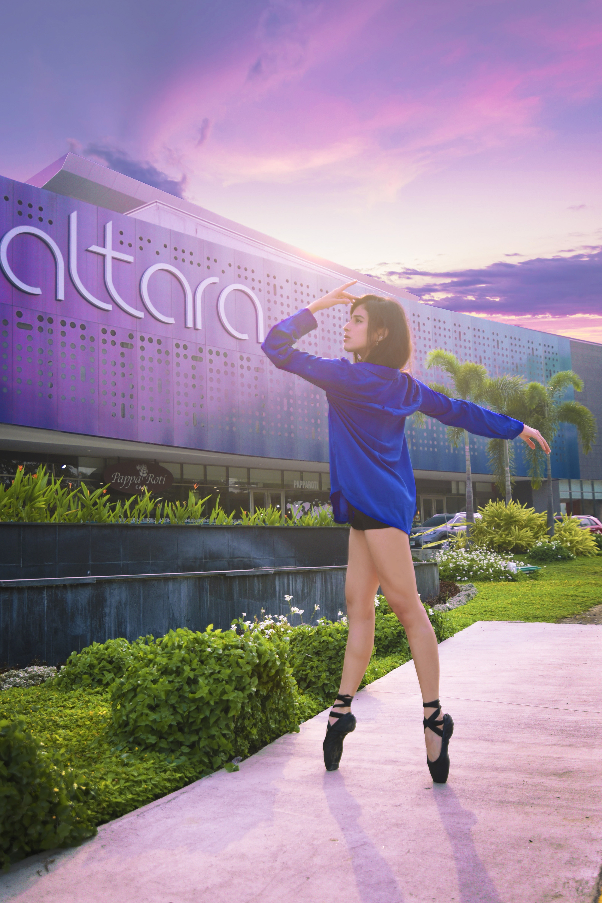

ALESSANDRA HERNANDEZ
PHOTOGRAPHER / SOCIAL MEDIA MANAGER / GRAPHIC DESIGNER

While I was doing this session with Issa, she said something that stuck with me. She said, "Dance is the only art form in which we are the instrument." That is so true and so beautiful to me. And it is exactly what I wanted to share with this session.
Self-expression is a beautiful thing. Everyone has a way to communicate with the world. When I was in high school, I showcased that with my whole self. The principal did not understand me, my classmates had no idea what was wrong with me and even the school psychologist thought I was crazy and damaged. They failed to see that the way I carried myself was my form of art. Everything I did, from my hairstyle to my way of walking transmitted my state of mind. And that is true to everyone.
Some people prefer to mask their true feelings and think they don’t display them. But there is always some trait or small detail that gives them off. I prefer actions over words. And In this session I could see what dance meant to Issa. It is part of herself. When she arrived to the photoshoot location, she came in as a blank canvas. Once she put her pointe shoes, she carried herself in a different manner… with such grace and emotion it was overwhelming to see.
This is why I chose a ballerina for this session. Because what better way to showcase beauty than a person who transmits all that they are through dancing? Most of the people I know, wish to leave the country because of all the horrors they've lived here, I've been there… But Honduras is beautiful.
We have focused so much on the negative side of things that we fail to see all the beauty that surrounds us. As Hondurans, I think we should change that. Change isn't easy and it takes time. And most of the time, it isn’t pleasant either. But I firmly believe that one good deed at a time will have a long lasting effect. Let's focus on the positive. Let's share only good vibes and amplify all the good that happens around us.
There are a million ways we could change San Pedro. It takes only incentive and commitment. So, won’t you join me in changing the city?
P.D. I know I have been away of posting for a while. I have been swamped with work and moving into a new apartment that my own space and life have been hectic these past two weeks… I apologize. And I promise that I will keep the flow constantly. Anyway, I hope you like all the new projects that are coming along, because believe me, there are big things coming! Stay tuned!



Good vibes, Katia A. Hernandez